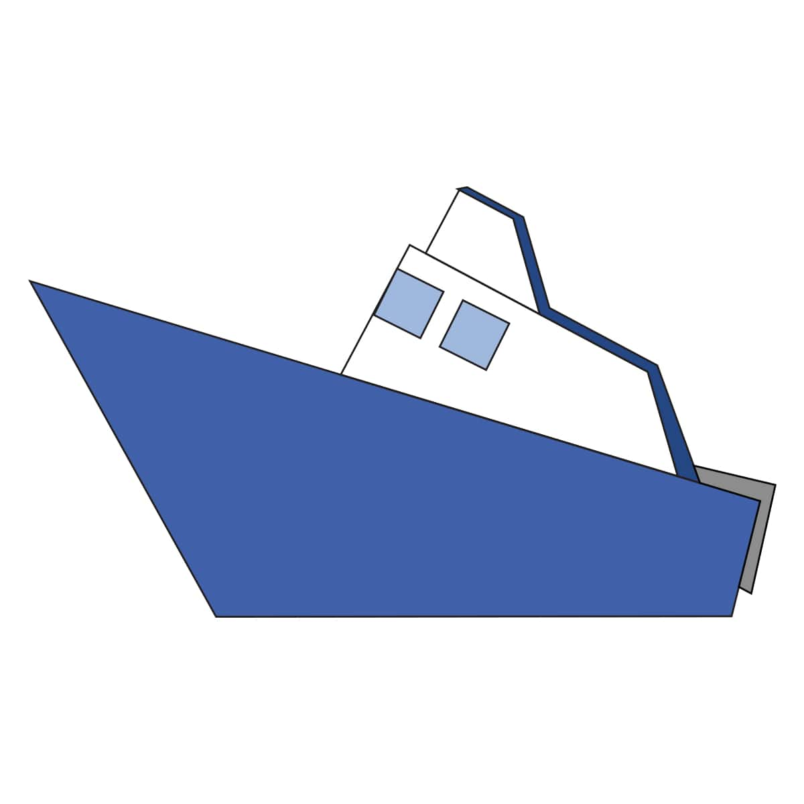
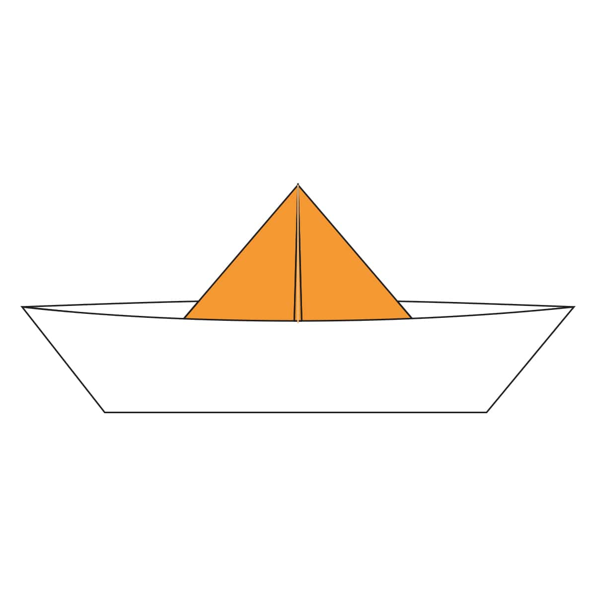
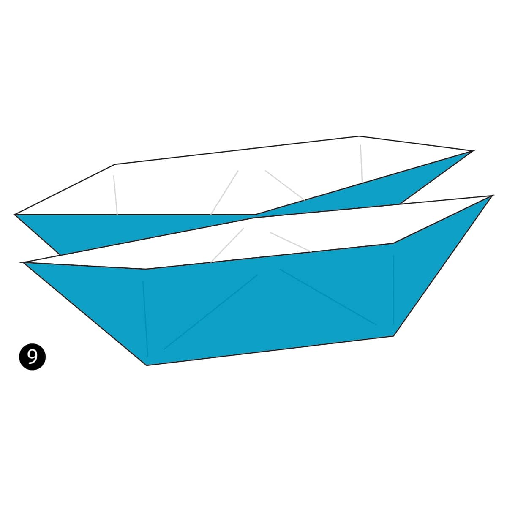

Planes!
Back
Speed Boat
- Fold and Unfold the paper in half diagonally both ways.
- Fold the top of the paper down to the centre.
- Fold the top layer of paper back up along the dotted line.
- Fold the very tip of the paper down along the dotted line.
- Fold the paper in half.
- Fold the paper back along the dotted line on both sides. This is an Outside Reverse Fold.
- Rotate the model so it’s facing the right direction.

Traditional Boat
- Fold the paper in half and then unfold it.
- Fold the paper in half the other way.
- Fold the top corners down and to the centre.
- Fold the top layer of paper up along the dotted line.
- Fold the bottom layer of paper up and behind the model.
- Open up the paper the middle. Push in the sides while pulling the middle forward and back. Flatten everything.
- Fold the top flap of paper up along the dotted line then repeat behind.
- Pull the paper back out like you did in step 6.
- Pull both ends out.

Catamaran
- Fold the paper in half and the unfold it.
- Fold both sides of the paper in towards the centre.
- Fold the top and bottom parts of the paper towards the centre.
- Unfold both of these two folds.
- Open up the bottom part of the paper along the dotted lines.
- Squash Fold the paper down.
- Open up the paper at the top just like you did on the bottom and then Squash Fold it flat.
- Open up the paper at the top just like you did on the bottom and then Squash Fold it flat.
